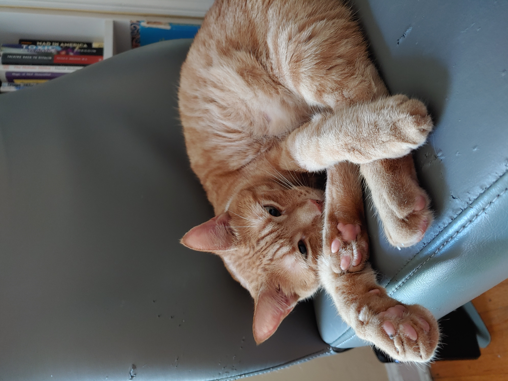
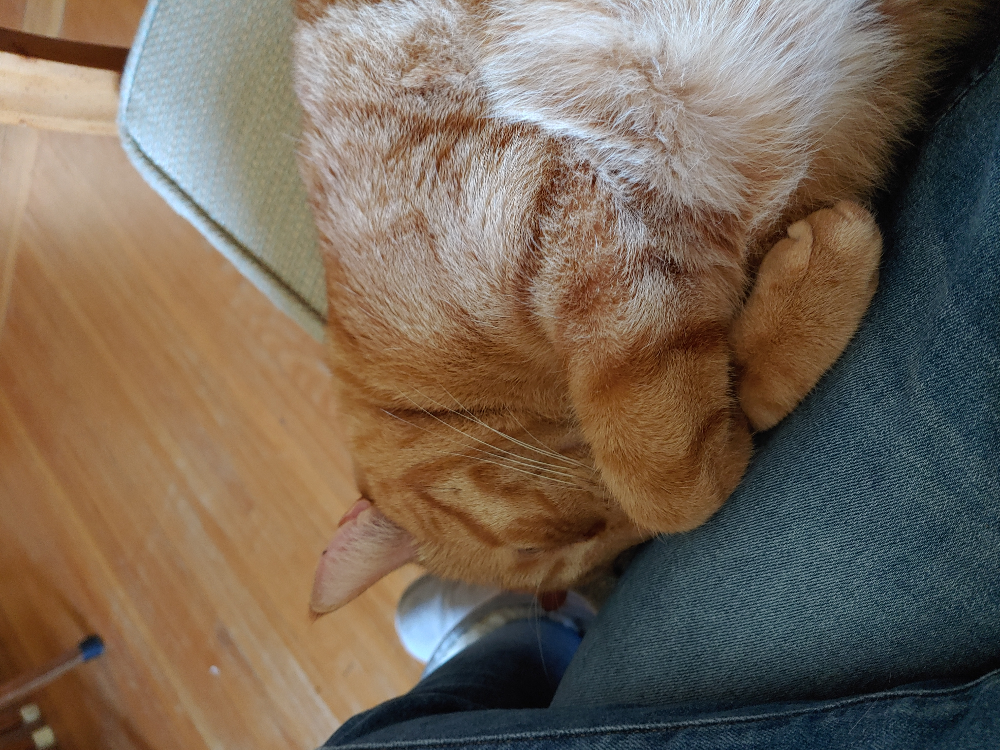

My favorite kinds of exercise are weightlifting, swimming and yoga.
| Weekly Workout Schedule | |
|---|---|
| Day | Workout |
| Monday | Back and Biceps |
| Tuesday | Legs(Glutes and Hamstrings) |
| Wednesday | Core and Yoga |
| Thursday | Legs(Quads and Calves) |
| Friday | Chest, Triceps and Shoulders |
| Saturday | Rest or Makeup day |
| Sunday | Rest |
I enjoy following yoga classes on YouTube since it's quick and convenient. I like to do an energizing morning yoga to start my day and a relaxing evening yoga to end my day.
I enjoy spending time in the kitchen experimenting with different ingredients and spices. I typically don't follow recipes I just throw things together in my cast iron pan and whatever comes out is usually pretty good. My go to dish is a stir fry with fresh greens, nuts and a protien over rice.
I am the proud furr-mom to two cats. They are a girl and boy named Amber and Kyte, respectively. I found them in my backyard when they were kittens and brought them inside. They are the best lovable, furry and purring addition to my life.
 